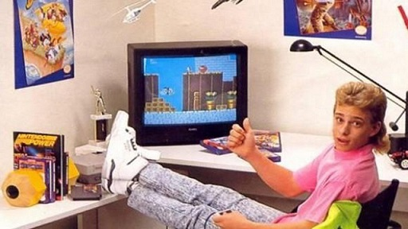

A 90s Gamer's Paradise!
|
Complete your collection with our vast selection of classic games to pick from! |
|

|
We have games for almost every system from the best decade in gaming, including:
Unfamiliar with the world of 90s gaming? See below for a brief history, and why so many people around the world have immense passion for a seemingly outdated pastime.
The 16-Bit Wars
The 1990s is often considered one of the most revolutionary decades in gaming. It spawned many of the tropes seen in modern day gaming, including the first person genre, and the idea of more than one company holding control of the entire industry. At the beginning of the decade, Nintendo held the entire industry in their hands. With the release of their bestselling console, the NES, midway through the eighties, they essentially had a monopoly on video games at the time. However, the 8-bit graphics that the console relied on was slowly becoming outdated as technology grew more and more powerful.
Meanwhile, a humble little company called Sega had released a console in the eighties called the Sega Master System that sold well in Japan, but didn't have any hold in the West. However, that all changed when they released what would be considered their most successful console: the Sega Genesis. The 16-bit console was a beast for its time; it had arcade-level graphics and a brutal marketing campaign that advertised high-adrenaline games while directly attacking Nintendo's family-friendly appeal. Their slogan at the time, "Genesis does what Nintendon't", was a reflection of this. Luckily for them, this technique worked. Soon, more kids were asking their parents for a Genesis than any other console, and owning one was considered "cooler" than owning an NES. Sega quickly gained the upper hand over Nintendo, and held a significant chunk of the market.
Meanwhile, Nintendo had an ace up their sleeve: the Super Nintendo Entertainment System (SNES) released in 1991 to critical acclaim. It had graphics on-par with the Genesis, with all the quality games that Nintendo offered. Despite this, Sega still held their own. This resulted in perhaps the most infamous battle in gaming history: The 16 Bit War. Both companies fought relentlessly for the spotlight, but one company would eventually come out on top; more on that later.
Controversial Gaming
While fierce competition was happening in the console market between Sega and Nintendo, there were two games released in Arcades and PC respectively that shook the industry permanently: Mortal Kombat and Doom. These two games were violent, as the former allowed players to perform brutal finishing moves on their opponent, while the latter would see the player travel through hell to blow up demons. Parents didn't want their children to play these game, and so for the first time, video games were treated by the mainstream like any other medium. However, this meant that the market needed to be regulated. Therefore, the ESRB was created, which worked similar to the MPAA in that it would allow parents to see whether or not a video game would be appropriate for their child to play. The same ESRB rating system is still used today.
3D Gaming / End of an Era
As the 16-Bit War raged on, and a rating system was established among the videogame market, it was time for technology to advance even more toward the end of the 90s. Arguably, the leap to 3D graphics will be the most revolutionary in the game industry, as it will be an essential part of each and every major game in the modern day. Both Nintendo and Sega worked hard to get their 3D consoles out into the market, which were the Nintendo 64 and the Sega Saturn respectfully. However, there was another company rising up as a fearsome force to be reckoned with: Sony. With a price-point $100 cheaper than the Saturn, and a release to the market a year before the N64, the Sony PlayStation quickly rose to the top and toppled Sega with their sales numbers. Part of their success was due to how many third-party companies they had under their belt, and a wide variety of games they maintained on their platform.
As one last-ditch effort to save their company, Sega released their console Dreamcast in 1999 after the Saturn sold relatively poorly. But the damage was already done. Sega would eventually fizzle out and work exclusively as a publisher. Within two years, their most prominent mascot would be featured on a console by Nintendo: their biggest opponent of the nineties.
That is a brief summary of the history of gaming in the 1990s, however there are many more interesting events that transpired. If you would like to know more, head over to the Wikipedia page to find out more, including the beginning of online gaming, the birth of survival horror, the short-lived FMV-based games, portable gaming, and countless other interesting parts of gaming in the 90s!